Hitachi, Ibaraki: things to do, food and stays
Hitachi · Ibaraki
Hitachi
Highlighted on the Ibaraki map.

Stay
ひたち湯海の宿 はぎ屋

Hitachi Yu Umi No Yado Hagi Ya
Inn in Mizuki, Hitachi with local seafood dinners.
日立・太田尻海岸 うのしまヴィラ
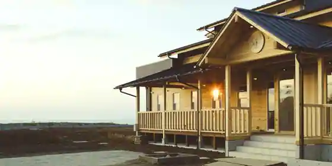
Hitachi Ota Shiri Kaigan Unoshima Villa
ホテル テラス ザ スクエア 日立
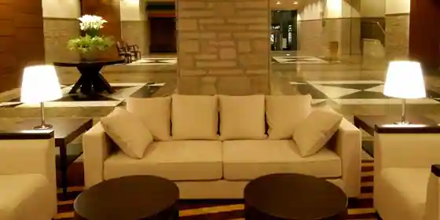
Hotel Terrace Za Sukuea Hitachi
ホテルルートイン日立多賀
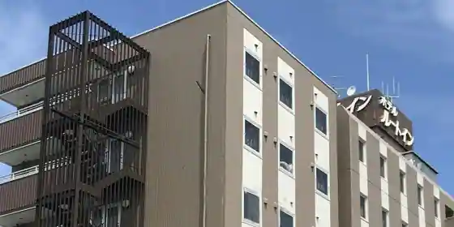
Hotel Route Inn Hitachi Taga
Hotel in Taga, Hitachi; 7-minute walk from Hitachitaga Station.
ホテル網元
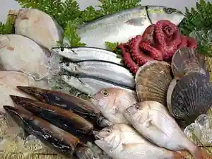
Hotel Amimoto
ホテル日立ヒルズ（ＢＢＨホテルグループ）
Hotel Hitachi Hiruzu (BBH Hotel Gurupu)
Hotel in Kashima, Hitachi with breakfast available.
ツーリストホテル日立
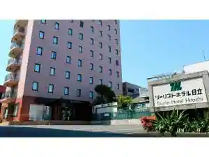
Tsurisuto Hotel Hitachi
Hotel in Kashima, Hitachi with breakfast available and parking.
KOKO STAY 日立
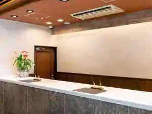
KOKO STAY Hitachi
Inn in Sachi, Hitachi with parking; 2-minute walk from Hitachi Station.
東横ＩＮＮ日立駅前
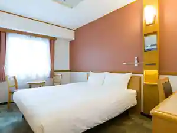
Toyoko INN Hitachi Ekimae
Inn in Sachi, Hitachi with breakfast available.
スパ＆サウナ ホテル日立プラザ（ＢＢＨホテルグループ）
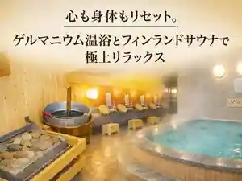
Supa & Sauna Hotel Hitachi Plaza (BBH Hotel Gurupu)
Hotel in Sachi, Hitachi with a sauna and a large communal bath.
ひたちオーシャンビュー ホテル＆リゾート
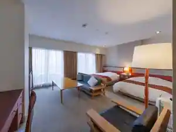
Hitachi Oshanbyu Hotel & Resort
オーシャングランピング日立
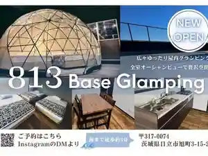
Oshanguranpingu Hitachi
Dining
山文魚

Yamabun Sakana
シーバーズカフェ
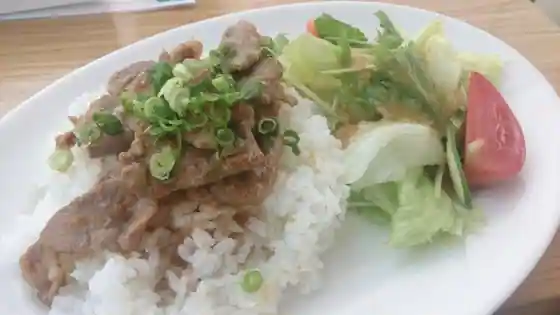
Shibazu Cafe
磯料理 光力
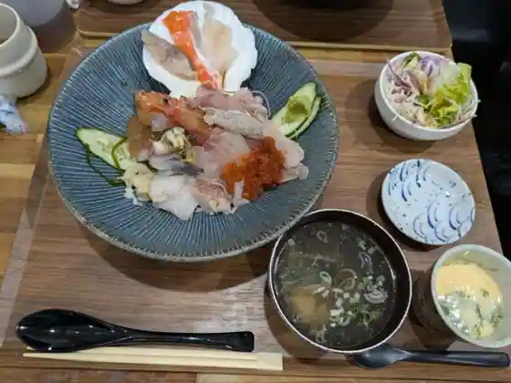
Iso Ryori Koryoku
ひかり食堂
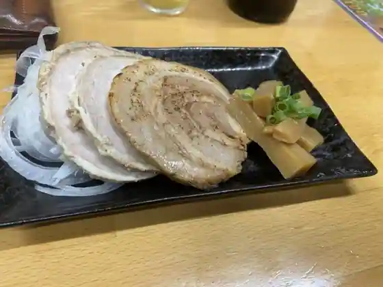
Hikari Shokudo
格子屋 日立駅前店
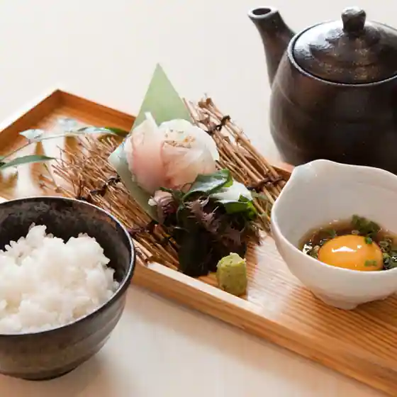
Koshi Ya Hitachi Ekimae
あかつ水産 道の駅 おさかなセンター店
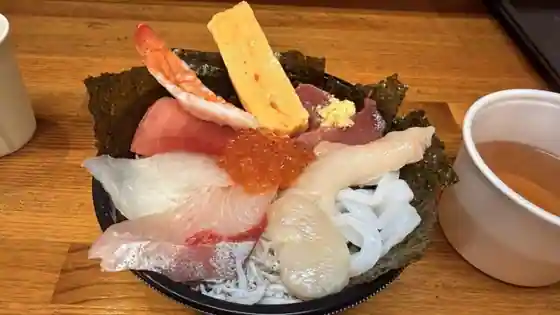
Akatsu Suisan Michi No Eki Osakana Center
スタミナラーメン三四郎
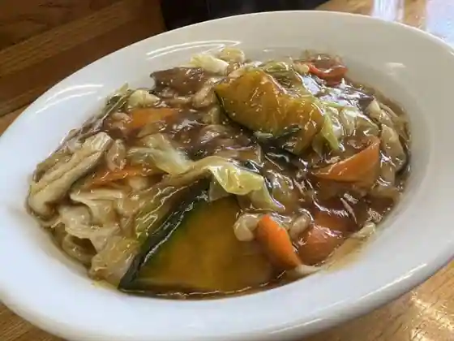
Sutamina Ramen Sanshiro
とんかつ専門店とん
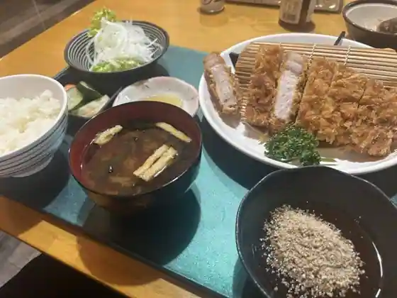
Tonkatsu Senmonten Ton
桃苑
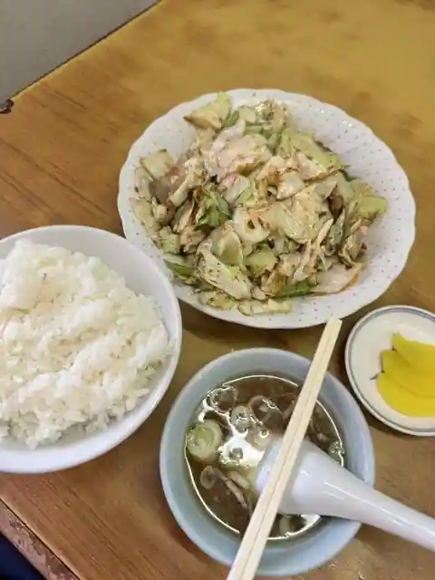
Momo En
鈴木食堂
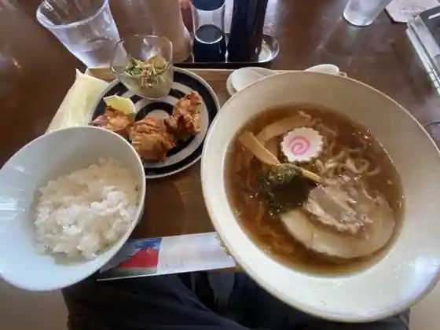
Suzuki Shokudo
中華食堂 天海
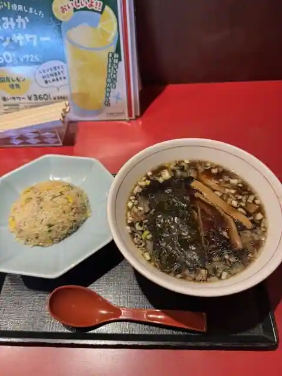
Chuka Shokudo Amagai
サングリア
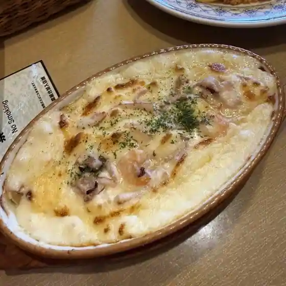
Sanguria
入四間
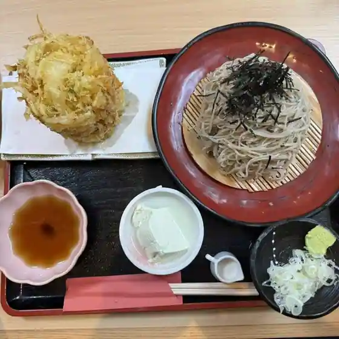
Nyu Shiken
いくよ食堂
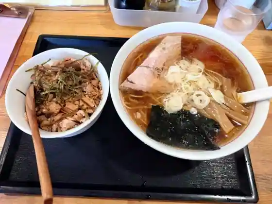
Ikuyo Shokudo
saku-hana*
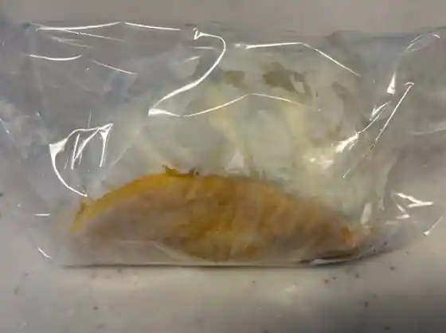
saku-hana*
一平鮨
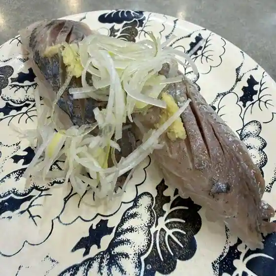
Ippei Sushi
いづみや
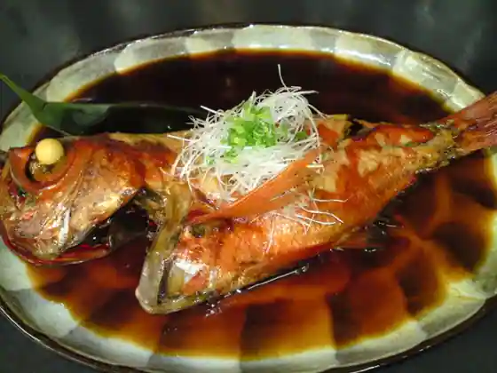
Izumiya
白河手打中華そば 中村
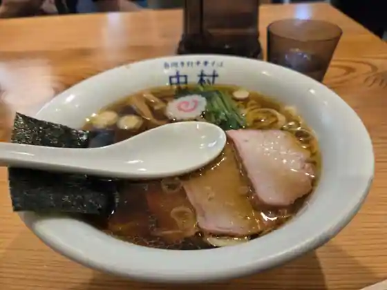
Shirakawa Teuchi Chuka Soba Nakamura
海鮮茶屋 濱膳
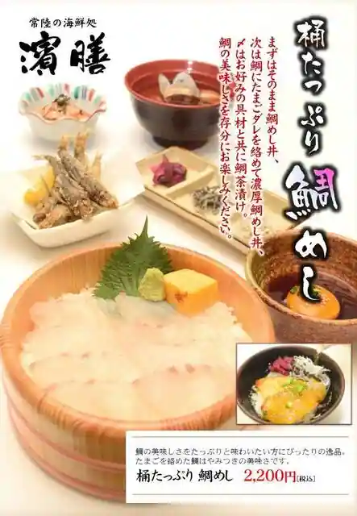
Kaisen Chaya Hama Zen
大盛軒
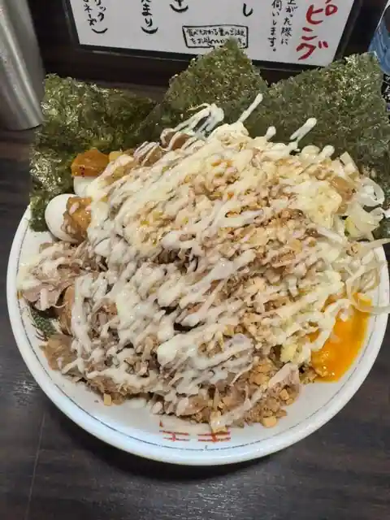
Omori Ken
らぁ麺屋まるわ
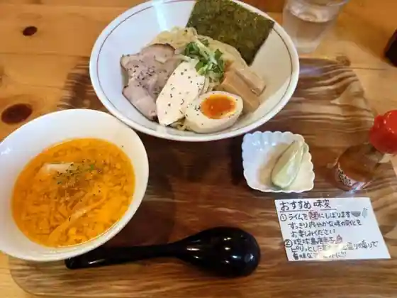
Ra Men Ya Maruwa
モルト ボーノ
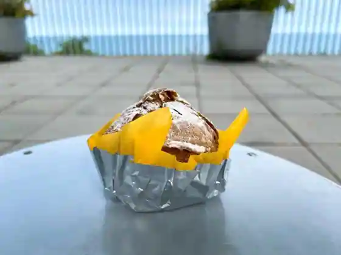
Moruto Bono
バルバ ロッソ
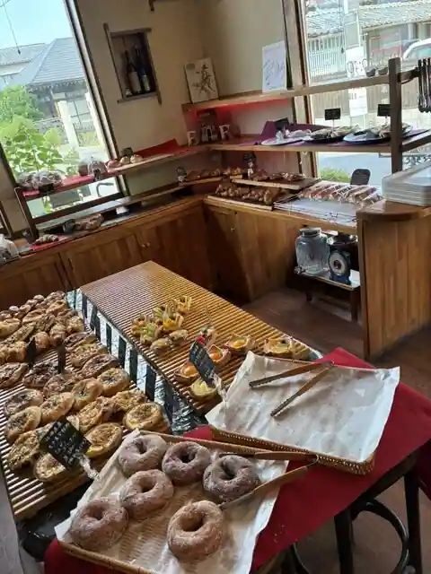
Baruba Rosso
四代目 むじゃき
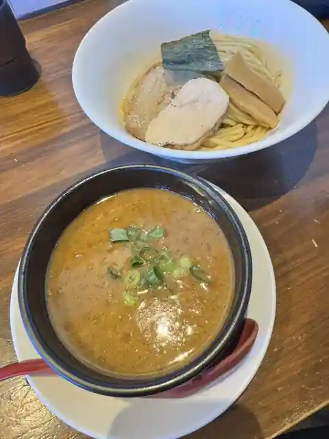
Shi Daime Mujaki
Sights
O Iwa Shrine
Hitachi Kamine Park

Izumigamori Izumi Shrine (Itoyo Village Izumigamori Park)

Ose Beach

Oku Hitachi Kirara Village

Kuji Hama Beach
U no Misaki Onsen Hitachi Uguru Rai no Yu Juo
Yu Raku Village Hitachi Mise
Kawara Ko Beach
SEA BiRDS CAFE
Ishi Hama Beach
JA Ibaraki Hitachi Juo Bussan Center U Ki U Ki
Hitachi Shibikku Center
Hitachi Minami Doraibuin Kanta Soba
Roadside Station Hitachi Osakana Center
Mizuki Beach
Juo Pa no Rama Park
Kawajiri Beach
Hitachi Yu Umi no Yado Hagi Ya
Miso Kura Mizuki no Sho (Uchiyama Miso)
Kuji Sanpia Hitachi
Nichi Ko Memorial Museum
Horizon Kamine
Kokaigahama Green Park
Hi Tatchi Rando Hareniko !
Heiwadori
Washoku Ya
Hitachi Minami Doraibuin Kaiun Kaitenzushi Ippei Sushi
Ko Bo Chi Park
Ishi Hama Coast (Umiu Hokaku Ba)
U no Shima Vira
Orikasa Budo Sono
Nakazato Reja Farm
Higashi Namerikawa Kaihin Ryokuchi
Yoshida Seion Raku Memorial Museum
Sushi Kappo
Hima Osamu Kan
Hitachi Dai Entotsu
Hitachi Ushi Yakiniku Suteki Senmonten (Niku no Resutoran Kurata)
Kaisen Chaya Hama Zen
Koshi Ya Hitachi Ekimae Mise
Toyoko In Hitachi Ekimae
Hitachi Minami Doraibuin Kaisen Shoshi Okaze
Ogi Tsuyama Nature Park
Daini Tsunesaku
Sukegawa Yama City Tami Forest
JA Hitachi Jun Aji Man Saikan
Hitachi Kyodo Museum
Tonkatsu Ton
Kikuno Kaori Shuzo
Sushi Tenpura Unagi Sushi Matsurigoto
Iru Bankare
Ajidokoro Bekkan Amimoto
Suwa Umebayashi
JA Ibaraki Hitachi Toyora Nosambutsu Chokubai Tokoro
Teuchi Chi Soba Hana Mizuki
Sukegawa Kaibo Castle Ruins
Mike Koto Tokoro Utsukushika no
Hakusan
JA Ibaraki Hitachi Fureai Park Hidaka
Teuchi Chisoba Taikoku Ya
Fuji Farm
Morishima Shuzo
Pateisurii Mashieri
MIDORITO SAUNA (Midoritosauna)
Resutoran Sokai
Satokawa Hatsudensho
Wayo Shoku Na
Yu Shoku Sake Bo Sakae Raku
Man Taira
Azuma Kan
Hitachi Kozan Ato no Yamazakura